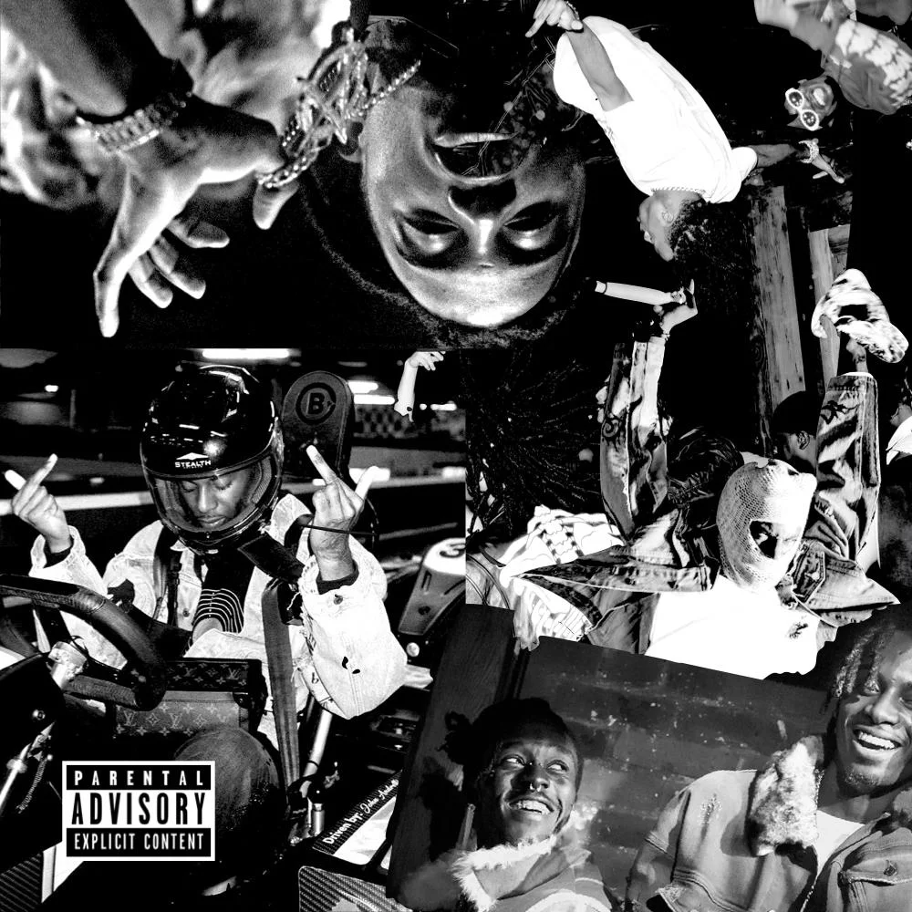
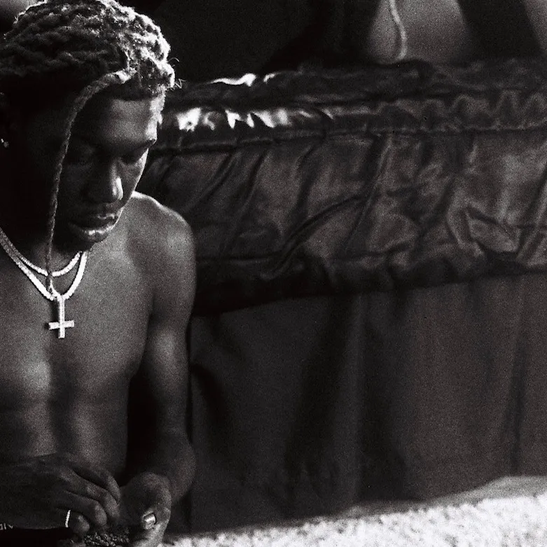
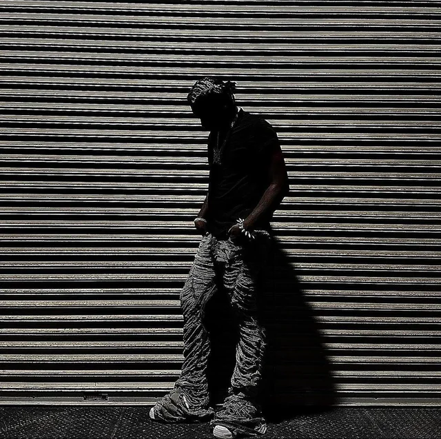

Welcome to my the opium site. I will take you on a journey through the
life of the music group Opium+** The website theme is black and white.
We will cover MY two favourite artists in the group named PlayBoi Carti
and Destroy Lonely.

PlayBoi Carti +**
Playboi Carti, born Jordan Terrell Carter on September 13, 1996, is an
influential American rapper, songwriter, and fashion icon. Emerging
from Atlanta, Georgia, Carti has made a significant impact on the
hip-hop scene with his distinctive style and innovative approach to
music. His self-titled debut mixtape, "Playboi Carti," and the
subsequent release "Die Lit" solidified his place in the industry,
featuring hypnotic beats, catchy ad-libs, and a dynamic flow that
resonated with a wide audience. Carti is known not only for his
musical prowess but also for his avant-garde fashion choices, making
him a trendsetter in the realm of streetwear and high fashion. His
ability to effortlessly blend fashion, charisma, and musical talent
has positioned Playboi Carti as a cultural force, leaving an indelible
mark on the contemporary landscape of hip-hop.

Destroy Lonely +**
Bobby Wardell Sandimanie III was born on July 30, 2001. He has two
younger sisters and an older brother which he mentions as only being
half-siblings. He mentions feeling more like an only child. He grew up
freestyling with inspiration from his father, rapper I-20. He began
home school in the sixth grade with given permission from his
grandmother who was a former teacher. He enrolled back in school in
the ninth and tenth grades where he recalls abusing the drug Xanax. He
cites his feeling that his substance abuse was destroying him as the
origin of the "Destroy" part of his stage name. He spent his
adolescent years in solitude which he cites as the origin of the
"Lonely" part of his stage name. During his time in school, he had
strength in writing.

Ken Carson +**
Ken Carson is an American rapper who gained prominence in the hip-hop
scene. Associated with the collective and record label known as Opium,
Ken Carson has carved a niche for himself with his distinctive style
and contributions to the rap genre. His music often features a blend
of trap beats, catchy hooks, and energetic flows that resonate with a
younger audience. Ken Carson is recognized not only for his musical
talent but also for his influence in the fashion world, aligning with
the broader trend of rappers becoming style icons. His collaborations
with other artists within the Opium collective and beyond have
contributed to his growing reputation within the hip-hop community.